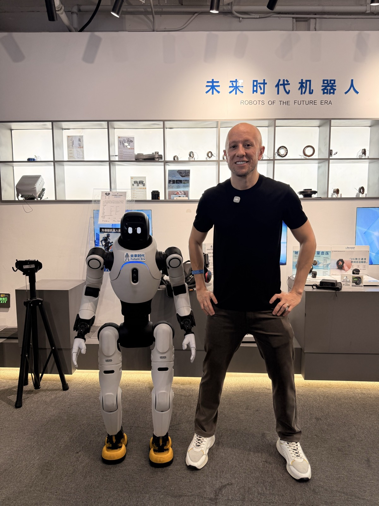
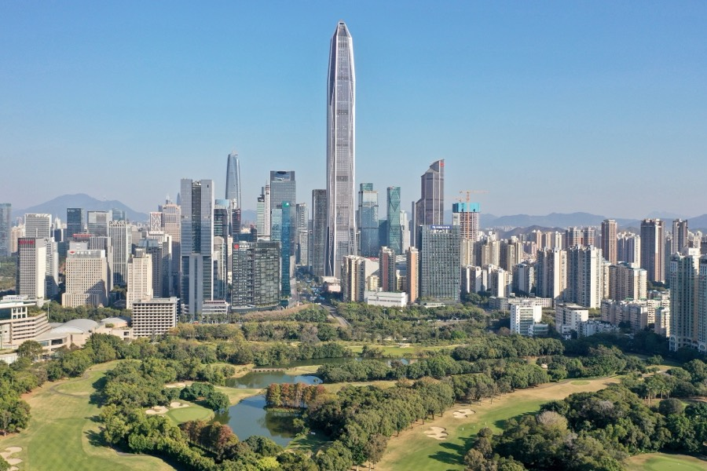

A China não é apenas um destino.
É onde muitas oportunidades começam, antes de chegarem ao Brasil.
Enquanto muitos tentam entender a China à distância, outros escolhem estar onde ela acontece.
Há quem tente decifrar a China por vídeos, catálogos e fornecedores encontrados nas bases digitais. É possível? Sim, entretanto é sempre uma leitura de segunda mão, filtrada por intermediários, atrasada em relação ao que realmente está se movendo.
A China é um dos maiores laboratórios comerciais do mundo: onde produtos, fornecedores, tendências e modelos de negócio surgem antes de se tornarem óbvios por aqui.
Estar presente muda a equação. Você deixa de reagir ao que já chegou ao Brasil e passa a enxergar o que ainda está por chegar, com tempo de se posicionar antes dos outros.
Não é turismo.
É imersão de negócios e identificação de oportunidades!
O ganho cultural é consequência, o foco é ampliar a visão comercial, observar mercados em funcionamento, entender como fornecedores operam, enxergar tendências antes que virem consenso, e voltar com repertório prático para decidir melhor no seu próprio negócio.
Uma curadoria pensada para quem decide.
Curadoria estratégica
Cada ambiente, visita e contexto é escolhido com intenção comercial, não por roteiro de cartão-postal.
Grupo seleto
Número limitado de participantes, para preservar a profundidade das conversas e a qualidade da experiência.
Foco em negócios
Tudo é orientado a ampliar repertório, leitura de mercado e possibilidades reais, não a entretenimento.
Observação real de mercado
Ver de perto como produtos nascem, como fornecedores trabalham e como a escala chinesa realmente opera.
Experiência com contexto
Não basta ver. É preciso entender o que se está vendo, com leitura e interpretação ao longo do caminho.
Networking empreendedor
Conviver com um grupo de perfil empresarial gera trocas que, muitas vezes, valem tanto quanto a própria viagem.

O que normalmente só se vê depois, quando já é tarde.
- iNovos produtos antes de se popularizarem no Brasil
- iiTendências de consumo em formação
- iiiFornecedores e diferentes formas de operar
- ivModelos de operação e eficiência em escala
- vLogística e a engrenagem por trás do comércio
- viEscala comercial em sua real dimensão
- viiOportunidades que podem inspirar negócios no Brasil
Para quem busca diferenciação e novas oportunidades de mercado.
Do preparo ao retorno, com propósito em cada etapa.
Preparação
Antes de embarcar, o olhar é alinhado: o que observar, como interpretar e como aproveitar cada ambiente com mentalidade de negócios.
Chegada à China
O primeiro contato com a escala, a velocidade e a infraestrutura de um dos ambientes comerciais mais relevantes do mundo.
Imersão em mercados e ambientes comerciais
Estar dentro dos lugares onde o comércio acontece, observando produtos, dinâmicas e movimentos de mercado em primeira mão.
Observação de fornecedores e tendências
Entender como fornecedores operam, comparar possibilidades e perceber tendências que ainda não chegaram por aqui.
Networking e troca com o grupo
A leitura compartilhada entre empresários revela ângulos e oportunidades que dificilmente se enxerga sozinho.
Retorno com mais visão, repertório e possibilidades
Voltar não com lembranças, mas com referências, contatos e clareza sobre caminhos para o seu negócio.
Doze dias com intenção comercial em cada etapa.
De Xangai à Canton Fair em Guangzhou, com visitas técnicas a fábricas e o encerramento em Shenzhen.
Embarque do Brasil para a China
Início da jornada empresarial. O grupo embarca em São Paulo (Guarulhos) com destino a Xangai, com conexão internacional em Doha.
- 01h55Embarque em São Paulo / GRU
- ·Conexão internacional em Doha · pernoite em trânsito
Chegada em Xangai
A porta de entrada para a China moderna: velocidade, escala, inovação e visão de futuro. Recepção do grupo, traslado ao hotel e descanso para adaptação ao fuso.
- 16h20Chegada em Xangai / PVG
- 17h30–19h00Imigração, bagagens e recepção do grupo
- 19h00–20h30Traslado do aeroporto ao hotel
- 20h30–21h30Check-in · noite livre
Boas-vindas e preparação empresarial
Manhã livre para adaptação. Almoço de boas-vindas e briefing empresarial: como aproveitar a Canton Fair, abordar fornecedores, avaliar produtos, pensar em MOQ, amostras, prazos e próximos passos comerciais.
- 09h00–11h30Manhã livre para adaptação
- 12h00–14h00Almoço de boas-vindas (incluso)
- 14h30–16h30Briefing empresarial da imersão
- 17h00+Horário livre em Xangai
Xangai → Guangzhou em trem de alta velocidade
Uma das experiências mais marcantes da infraestrutura chinesa. Guangzhou será a base para a Canton Fair, a maior feira multissetorial da China.
- 07h00Check-out e saída do hotel em Xangai
- 09h00–16h00Trem de alta velocidade Xangai → Guangzhou
- 16h00–17h30Chegada e traslado ao hotel
- 17h30–18h30Check-in · noite livre
Canton Fair, primeiro dia
Reconhecimento dos pavilhões, leitura da dinâmica da feira e primeiros contatos comerciais. Mais que uma feira de produtos: um ambiente de leitura de mercado.
- 08h00Saída do hotel para a Canton Fair
- 09h30–12h30Reconhecimento dos pavilhões
- 14h00–17h30Continuação da visita à feira
- 18h00–19h00Retorno ao hotel · noite livre
Canton Fair, fornecedores e oportunidades
Foco direcionado: fornecedores estratégicos, catálogos, preços, prazos, MOQ e capacidade produtiva. Transformar curiosidade em oportunidade.
- 09h30–12h30Visita direcionada aos setores prioritários
- 14h00–17h30Análise de fornecedores e coleta de contatos
- 18h00–19h00Retorno ao hotel · noite livre
Canton Fair, negociação e comparação
Dia de aprofundamento: retornar aos melhores stands, tirar dúvidas técnicas e construir uma lista qualificada de potenciais parceiros, separando curiosidade de oportunidade real.
- 09h30–12h30Retorno aos fornecedores prioritários
- 14h00–17h30Rodadas de negociação e comparação de propostas
- 18h00–19h00Retorno ao hotel · noite livre
Consolidação de oportunidades
Dia flexível: retorno à feira, reuniões com fornecedores ou agendas individuais. No fim da tarde, encontro do grupo para troca de percepções e próximos passos.
- 09h00–16h30Dia flexível (feira, reuniões ou agendas individuais)
- 17h00–18h30Encontro do grupo para consolidação
Visita técnica + Guangzhou → Shenzhen
1ª visita técnica a uma fábrica ou fornecedor estratégico: operação, showroom e linha produtiva, seguida de reuniões e negociações. À noite, trem de alta velocidade para Shenzhen.
- 09h00–11h30Visita técnica 1 em Guangzhou ou região industrial
- 13h30–16h30Reuniões, negociações e agendas comerciais
- 18h00–18h40Trem de alta velocidade Guangzhou → Shenzhen
- 20h00+Chegada, check-in · noite livre
Visita técnica em Shenzhen
Shenzhen, símbolo da China tecnológica e inovadora. 2ª visita técnica (Shenzhen, Dongguan, Huizhou ou polo compatível) com tempo real para reuniões, showrooms e negociação.
- 09h30–12h00Visita técnica 2 em Shenzhen ou região industrial
- 13h30–17h30Reuniões, showrooms e agendas comerciais
- 17h30–18h30Retorno ao hotel · noite livre
Dia livre estratégico + despedida
Manhã livre para compras técnicas, showrooms ou reuniões individuais. Almoço de despedida e, à noite, traslado de Shenzhen ao Aeroporto Internacional de Hong Kong.
- 09h00–12h00Manhã livre em Shenzhen
- 12h30–14h30Almoço de despedida (incluso)
- 19h30Saída para o aeroporto de Hong Kong
- 01h25Embarque Hong Kong → Doha → São Paulo
Retorno ao Brasil
Mais que uma viagem: cada empresário volta com novas referências, novos contatos, visão ampliada de mercado e clareza sobre oportunidades reais.
- 01h25Embarque em Hong Kong · conexão em Doha
- 17h05Chegada prevista em São Paulo / GRU
O que está incluso.
- Passagem aérea internacional conforme voos definidos para o grupo
- 9 noites de hospedagem em hotéis selecionados
- Traslado de chegada em Xangai
- Almoço de boas-vindas em Xangai
- Briefing empresarial de preparação para a imersão
- Trem de alta velocidade Xangai → Guangzhou
- Traslado estação → hotel em Guangzhou
- Participação na Canton Fair (primeira fase)
- Traslados operacionais para a Canton Fair
- Visita técnica a fábrica/fornecedor em Guangzhou ou região
- Períodos reservados para reuniões e negociações
- Trem de alta velocidade Guangzhou → Shenzhen
- Visita técnica a fábrica/fornecedor em Shenzhen ou região
- Meio período livre estratégico em Shenzhen
- Almoço de despedida em Shenzhen
- Traslado final de Shenzhen ao aeroporto de Hong Kong
- Acompanhamento operacional do grupo durante toda a imersão
- Suporte pré-viagem: documentos, bagagem e preparação comercial

2ShenzhenTotal: 9 noites de hospedagem
A programação é uma previsão operacional e poderá sofrer ajustes conforme confirmação de voos, hotéis, horários de trens, localização das fábricas, disponibilidade dos fornecedores e agenda da Canton Fair. A essência permanece: estar na China ao lado de empresários, onde as oportunidades acontecem primeiro.
Para preservar a qualidade da experiência,
a imersão será realizada com
grupo limitado.
A profundidade dessa experiência depende de manter o grupo pequeno e bem alinhado. Por isso, o acesso é por avaliação de participação, e as vagas são confirmadas por ordem de inscrição.
O que costumam perguntar.
Não. É uma imersão de negócios. O foco é ampliar visão comercial, observar mercados, fornecedores e tendências, e não fazer turismo convencional. Cada etapa tem intenção estratégica.
Não. A experiência é valiosa tanto para quem já importa quanto para quem deseja ampliar repertório, entender o mercado e enxergar possibilidades antes de tomar decisões.
Para empresários, empreendedores, comerciantes, importadores e investidores, em geral para quem tem visão comercial e quer sair da teoria para ver oportunidades de perto.
Ao clicar em um dos botões da página, você é direcionado para o nosso WhatsApp, onde enviamos datas, condições, investimento e próximos passos com calma e de forma personalizada.
Sim. Para preservar a qualidade da experiência e a profundidade das trocas, o grupo é intencionalmente reduzido. O acesso é por avaliação de participação.
Não prometemos resultados ou negócios garantidos, seria leviano. O que oferecemos é acesso, curadoria, contexto e visão. As oportunidades reais nascem do que você enxerga e constrói a partir da experiência.